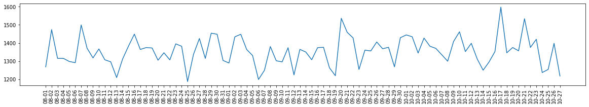

Q1 - What is the average distance traveled by trips with a maximum of 2 passengers
The average distance is 2.66 miles
Q2 - Which are the 3 biggest vendors based on the total amount of money raised
The following chart shows the top three vendors
Q3 - Make a histogram of the monthly distribution over 4 years of rides paid with cash
The following charts show the monthly distributions per year of rides paid with cash
Q4 - Make a time series chart computing the number of tips each day for the last 3 months of 2012
The following time series chart shows the tips for each day of the months of August, September, and October of 2012. Note that, we know from the previous answer that October is the last month with data of 2012.

Q5 - What is the average trip time on Saturdays and Sundays
The average trip time on weekends is 8 minutes and 44 seconds
Q6 - Analyze the data to find and prove seasonality
The following charts show the monthly distributions of rides without the cash filtering. Although some data is missing in 2011 and 2012, we still can see that the number of rides decreases dramatically in December of 2009 and 2010. We also see a significant decrease in January and February of 2009, 2010, and 2011. Note that these are the winter months in NYC. Probably, people tend to stay more at home in colder periods and, even more, in the holidays and winter breaks of December.
Q8 - Find what the fare amount (inclusive of tolls) for a taxi ride in New York City given the pickup and dropoff locations
Given the pickup and dropoff locations, we can get the trip distance. Luckily, this is already calculated in the original data. Hence, we can simply use the trip distance as the independent variable and the fare amount as the dependent one, which leads to a simple linear regression problem. After testing and training our data, we got the following results:
Score: 0.91
Mean Absolute Error: 0.98
Note that, we got a score of 0.91 with a simple linear algorithm approach, which indicates a strong relationship between the trip distance and the fare amount. Also, the mean absolute error shows that, on average, the prediction error is lower than one dollar (up or down).
Hence, considering the coefficients found by the algorithm, the formula to compute the fare amount is: 3.61509696 + (2.20388229 * trip_distance)
Finally, the following chart shows the expected fare amount as blue dots and the prediction of the linear regression algorithm as a red line. We see that there is still room for improvement if we further analyze weird data (e.g., a trip distance close to 50 with fare amount close to zero).
Q9 - Make a latitude and longitude map view of pickups and dropoffs in the year 2010
The following figure shows the NYC map with pickups and dropoffs